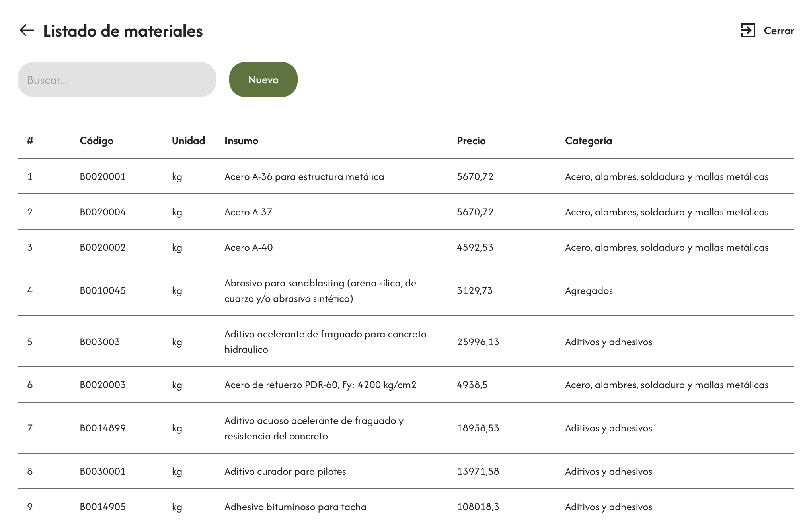
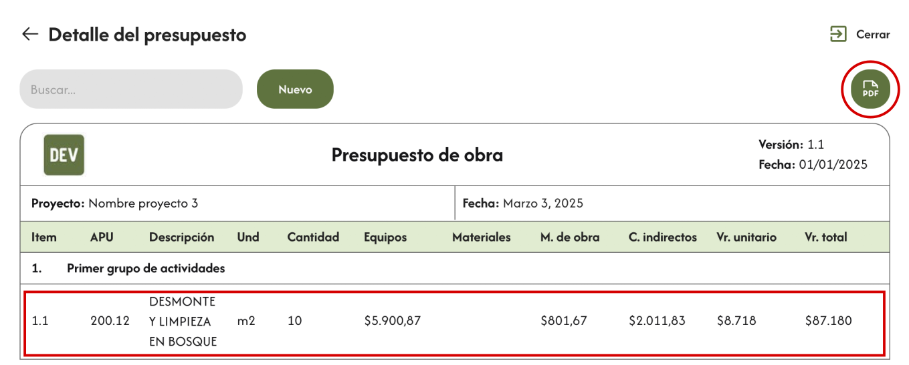

Presupuestos basados en APUs en la mitad de tiempo
Publicado el 20 de enero de 2025 por Cristian Torres
La Importancia del Presupuesto en un Proyecto Eléctrico

En el mundo de la ingeniería eléctrica, el presupuesto de obra no es solo un documento más: es la columna vertebral de cualquier proyecto. Al desglosar, mediante el uso de Análisis de Precios Unitarios (APU), de manera detallada materiales, equipos y mano de obra, este presupuesto no solo refleja el costo de ejecución, sino que también guía la planificación de recursos financieros.
✔ ¿Por qué es clave un presupuesto bien elaborado?
- Base sólida para las ofertas: Un presupuesto preciso es fundamental al presentar una propuesta, pues permite que tanto el cliente como el contratista tengan claridad sobre los costos involucrados.
- El mayor reto en la propuesta: Si bien un presupuesto es esencial, también es la etapa más exigente en términos de tiempo y esfuerzo. Es necesario tener un detalle exhaustivo de cada partida, lo que consume valiosos recursos administrativos.
✔ El Desgaste Administrativo: Un reto a superar
Presentar una propuesta no es tarea fácil. En muchos casos, se requieren hasta diez propuestas para cerrar un acuerdo, lo que no solo demanda tiempo sino que también implica un desgaste considerable tanto para el equipo de ventas como para los ingenieros encargados. Esto genera una sobrecarga administrativa que, de no gestionarse correctamente, puede restar productividad a las fases siguientes del proyecto.
¿Por Qué la Elaboración de Presupuestos Suele Ser Demorada?
La elaboración de un presupuesto suele ser un proceso demorado debido a varios factores. Generalmente se realiza utilizando hojas de Excel, lo que implica un alto grado de trabajo manual. Este proceso incluye tareas como copiar y pegar datos entre diferentes hojas de cálculo, ajustar fórmulas y verificar información de manera repetitiva, lo que aumenta el riesgo de errores humanos.
✔ Desafíos de las Hojas de Excel en la Elaboración de Presupuestos
Las hojas de Excel no facilitan la búsqueda de presupuestos históricos, lo que, en muchos casos, obliga a comenzar desde cero en cada nuevo proyecto o a no aprovechar de manera eficiente el trabajo realizado previamente.
✔ Insumos y Datos Descentralizados
En muchos casos, los valores de insumos como mano de obra y materiales no están centralizados, lo que dificulta aún más el proceso. Los responsables deben recopilar esta información dispersa y actualizarla constantemente, lo que genera más tiempo de trabajo y aumenta la probabilidad de inconsistencias.
La solución consiste en una aplicación web que almacena los datos de los presupuestos en la nube y que ofrece, entre otras, las siguientes funcionalidades.
1- Presupuestos organizados y reutilizables
👉 ¿Cómo mejora esto la elaboración de presupuestos?
Al crear un presupuesto a partir de uno existente ("clonarlo"), se reduce considerablemente el tiempo de elaboración.
2- Elaboración rápida y sencilla de APUs

👉 ¿Cómo mejora esto la elaboración de presupuestos?
En primer lugar, elimina la necesidad de copiar y pegar hojas de Excel utilizadas como plantillas de los APU. En segundo lugar, facilita la búsqueda de los insumos que deben incluirse en el APU. Por último, realiza todos los cálculos automáticamente, sin requerir la actualización manual de fórmulas, lo que reduce los errores.
3- Insumos centralizados, editables y actualizables
👉 ¿Cómo mejora esto la elaboración de presupuestos?
Permite un acceso rápido y fácil a la información, además de fortalcer la consistencia y precisión en su uso. Por otro lado, permite una actualización eficiente de los datos.
4- Resumen automatico de las actividades del presupuesto
👉 ¿Cómo mejora esto la elaboración de presupuestos?
Esta funcionalidad genera automáticamente el listado completo de actividades y costos del presupuesto de obra, agilizando el proceso y minimizando errores.
¿A quién va dirigida la solución?
Nuestra solución está diseñada específicamente para satisfacer las necesidades de empresas y equipos de ingeniería.
Modelo de negocio
Ofrecemos un servicio 1-1 completamente personalizado, adaptando la experiencia y los resultados a las necesidades técnicas y administrativas específicas de cada cliente.
Costo
El costo total varía según las características específicas que cada cliente desee incluir en la herramienta. De manera aproximada, la implementación tiene un rango de inversión entre 5 y 10 millones de pesos colombianos.